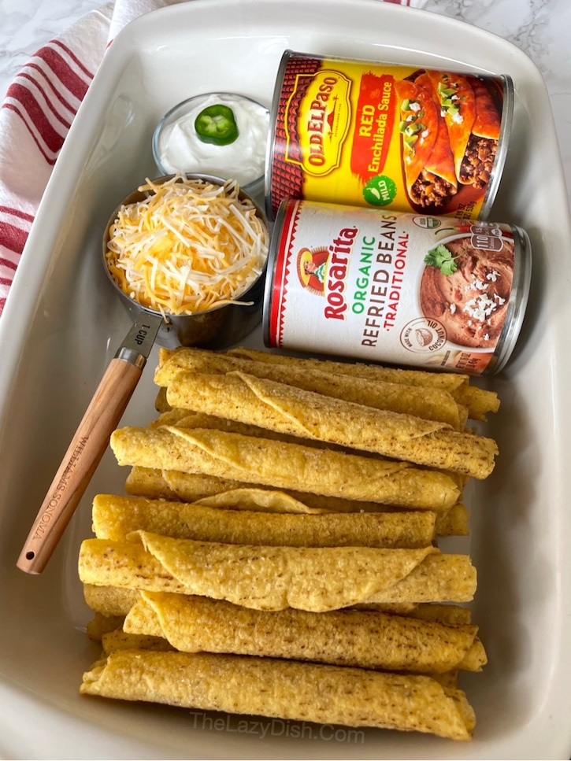

This quick and easy enchilada recipe will soon be a family favorite!

I won't lie, I was a little skeptical about using frozen taquitos in a recipe like this.
However, the convenience and time-saving aspect won me over. Sometimes, you just need a
quick and easy meal option!
Conclusion
Using frozen taquitos is a game changer for quick meals.
This recipe is perfect for busy weeknights.
Don't be afraid to customize with your favorite frozen burritos!